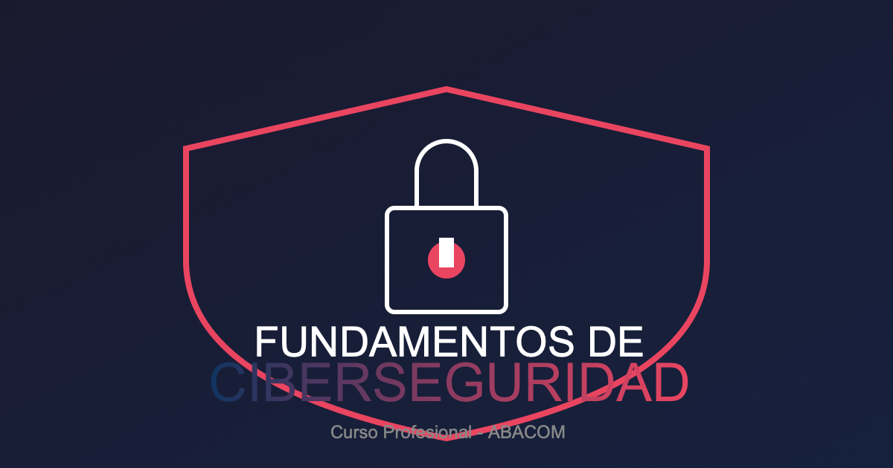

Fundamentos de Ciberseguridad
Protege tu vida digital — Aprende ciberseguridad desde cero
Curso profesional de ciberseguridad con enfoque PRACTICO basado en NIST CSF 2.0 y tendencias 2026
1 Fundamentos de Ciberseguridad

1.1 Objetivo del Curso
Transformar principiantes en profesionales competentes de ciberseguridad, capaces de:
- Comprender el marco NIST CSF 2.0 y sus funciones clave
- Implementar arquitecturas Zero Trust
- Gestionar identidad y acceso de forma segura
- Responder a incidentes de seguridad
Metodologia: Aprendizaje basado en RETOS con 40+ desafios praticos.
1.2 Lo que Aprendras
| Modulo | Tema | Horas | Desafios | Laboratorio |
|---|---|---|---|---|
| 1 | Fundamentos NIST CSF 2.0 | 6 | 6 | SI |
| 2 | Gestion de Identidad y Acceso | 6 | 6 | SI |
| 3 | Arquitectura Zero Trust | 8 | 8 | SI |
| 4 | Inteligencia Artificial en Seguridad | 6 | 6 | SI |
| 5 | Gestion de Vulnerabilidades | 5 | 5 | SI |
| 6 | Criptografia Post-Cuantica | 5 | 5 | SI |
| 7 | Respuesta a Incidentes | 4 | 4 | SI |
Total: 40 horas - 7 modulos - 40+ desafios - 7 labs - 7 quizzes
1.3 Metodologia: Aprendizaje Basado en RETOS
A diferencia de cursos teoricos, este curso se centra en la practica activa:
1.3.1 Caracteristicas Distintivas
- Retos Progresivos: 40+ ejercicios que aumentan gradualmente en dificultad
- Laboratorios (Labs): 7 sesiones guiadas donde DEBES teclear los comandos manualmente (NO copies/pegues!)
- Quizzes de Evaluacion: 7 evaluaciones objetivas (70% o superior para aprobar)
- Proyecto Integrador: Implementacion de Zero Trust al final
1.3.2 Flujo de Aprendizaje
1.4 Enfoque 2026: Tendencias Actuales
Este curso esta actualizado con las principales tendencias de ciberseguridad 2026:
| Tendencia | Impacto | Modulos |
|---|---|---|
| IA como vector de ataque | +89% Anual | 4 |
| Identidad como perimetro | 81% de brechas | 2, 3 |
| Zero Trust obligatorio | 96% organizaciones | 3 |
| Criptografia post-cuantica | Estandares NIST 2035 | 6 |
Fuentes: CrowdStrike 2026, NIST CSF 2.0, Gartner 2026, WEF Cybersecurity Outlook 2026
1.5 Herramientas que Aprendras
1.5.1 Redes y Escaneo
#Ejemplos de herramientas
nmap # Escaneo de puertos
wireshark # Analisis de trafico
nessus # Evaluacion de vulnerabilidades1.5.2 Gestion de Identidad
#Conceptos clave
OAuth 2.0 # Autorizacion
OpenID # Autenticacion
FIDO2 # Autenticacion fuerte
LDAP # Directorio activo1.5.3 Seguridad Web
#Herramientas
burp-suite # Proxy de pruebas
owasp-zap # Pruebas automaticas
nikto # Escaneo web1.6 Requisitos del Sistema
1.6.1 Hardware Minimo
| Componente | Requisito |
|---|---|
| RAM | 8 GB |
| CPU | 4 nucleos |
| Almacenamiento | 100 GB SSD |
| Red | 50 Mbps |
1.6.2 Software
| Tipo | Requisito |
|---|---|
| SO | Linux (Ubuntu 22.04+) o Windows 11 |
| RAM VM | 4 GB asignados |
| Virtualizacion | VirtualBox o VMware |
1.7 Distribucion Semanal (8 semanas)
| Semana | Modulo | Tema | Entregables |
|---|---|---|---|
| 1 | 1 | Fundamentos NIST CSF 2.0 | Quiz 1 |
| 2 | 2 | Gestion de Identidad | Lab 1, Quiz 2 |
| 3-4 | 3 | Arquitectura Zero Trust | Lab 2-3, Quiz 3 |
| 5 | 4 | IA en Seguridad | Lab 4, Quiz 4 |
| 6 | 5 | Gestion Vulnerabilidades | Lab 5, Quiz 5 |
| 7 | 6 | Criptografia Post-Cuantica | Lab 6, Quiz 6 |
| 8 | 7 | Respuesta a Incidentes | Lab 7, Quiz 7 |
Proyecto Integrador: Durante todo el curso (entrega semana 8)
1.8 Materiales del Curso
1.8.1 Contenido Principal
content/modulo-XX/- Teoria por modulolabs/- Laboratorios praticosquizzes/- Evaluacionesproyectos/- Proyecto integrador
1.8.2 Material Instructor
instructor/guia-*.md- Guias por moduloinstructor/soluciones-*.md- Soluciones labsinstructor/rubricas.md- Rubricas de evaluacion
1.9 Como Participar
1.9.1 En el Aula
- Lee el contenido del modulo
- Ejecuta el laboratorio manualmente
- Responde el quiz de evaluacion
- Discute en foros las dudas
1.9.2 Comandos del workflow
# Iniciar repositorio local
git init
# Ver estado de cambios
git status
# Crear rama para exercises
git checkout -b exercises/modulo-01
# Commitear progreso
git add . && git commit -m "Completado modulo 1"1.10 Licencia
Este curso esta bajo licencia Creative Commons Compartir Igual 4.0 (CC BY-SA 4.0)

Puedes:
- Compartir: Copiar y redistribuir el material
- Adaptar: Remezclar, transformar y crear
Bajo condiciones:
- Atribuir: Dar credito apropiado
- CompartirIgual: Distribuir bajo la misma licencia
1.11 Contacto
Instructor: Diego Saavedra
Especialidad: Ethical Hacking y Seguridad Ofensiva
Formacion: MSc Ciberseguridad (UCM)
- Perfil: https://statick88.github.io
- Email: dsaavedra88@gmail.com
- LinkedIn: https://linkedin.com/in/diego-saavedra-developer
- GitHub: https://github.com/statick88
“La seguridad no es un producto, es un proceso.” — Bruce Schneier